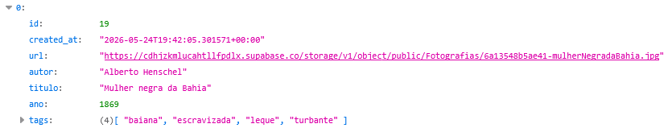

📷 Fotografias
URL base
https://griot.gt.tc/api/Fotografias.phpEndpoints
?q=: Busca insensível a maiúsculas e minúsculas a nível de substring nas colunas de título e autor, e busca por strings completas na coluna de tags.